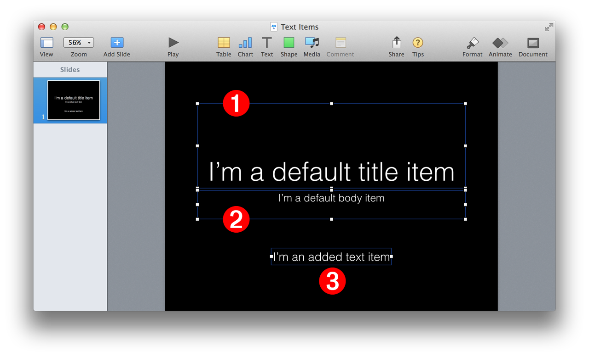
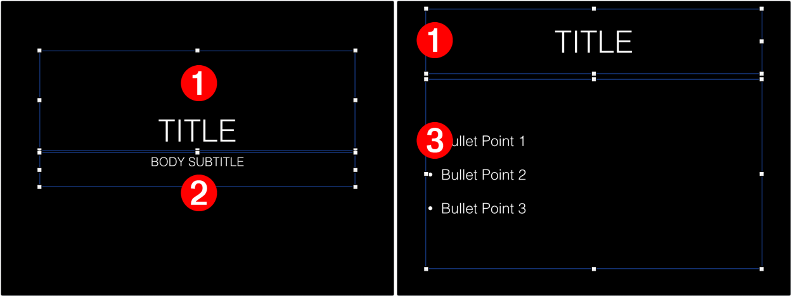
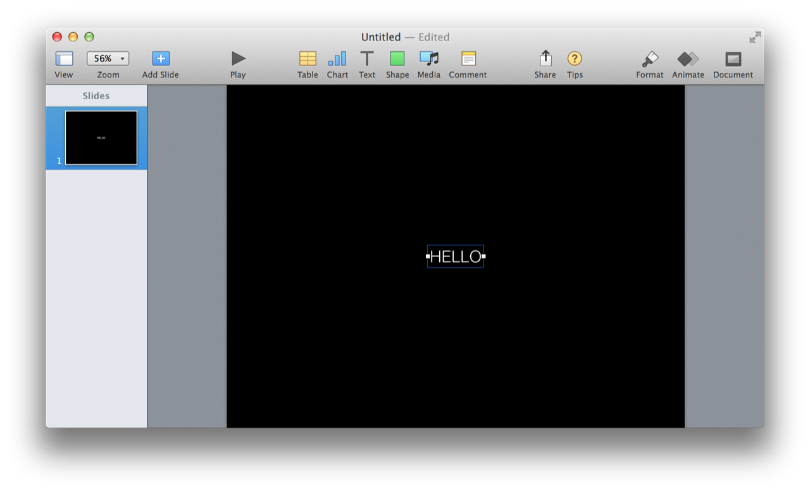
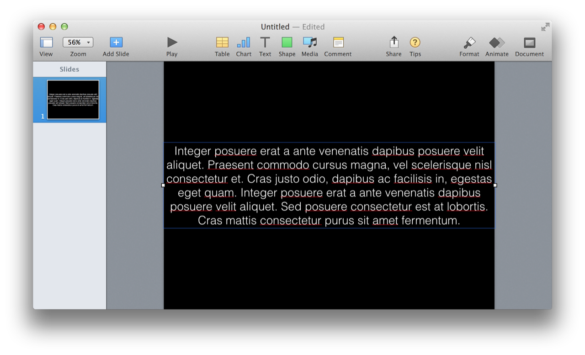
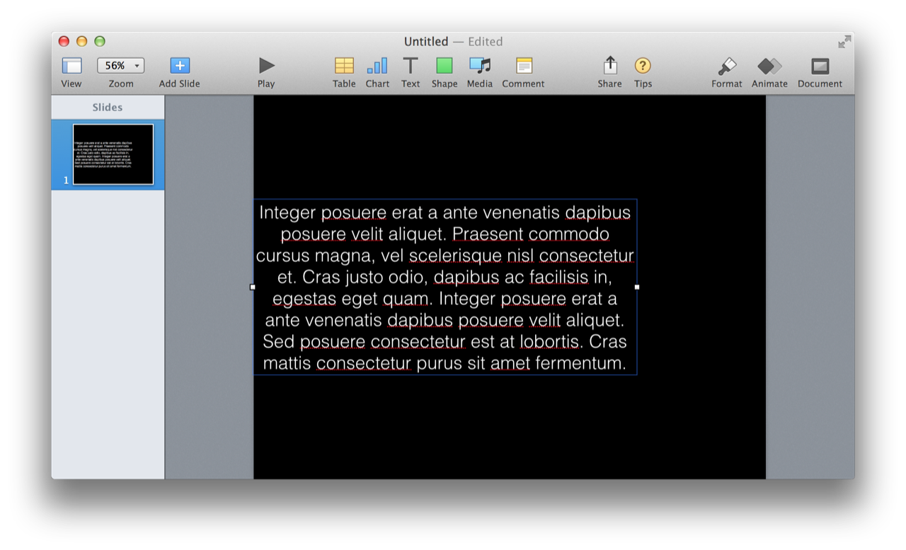
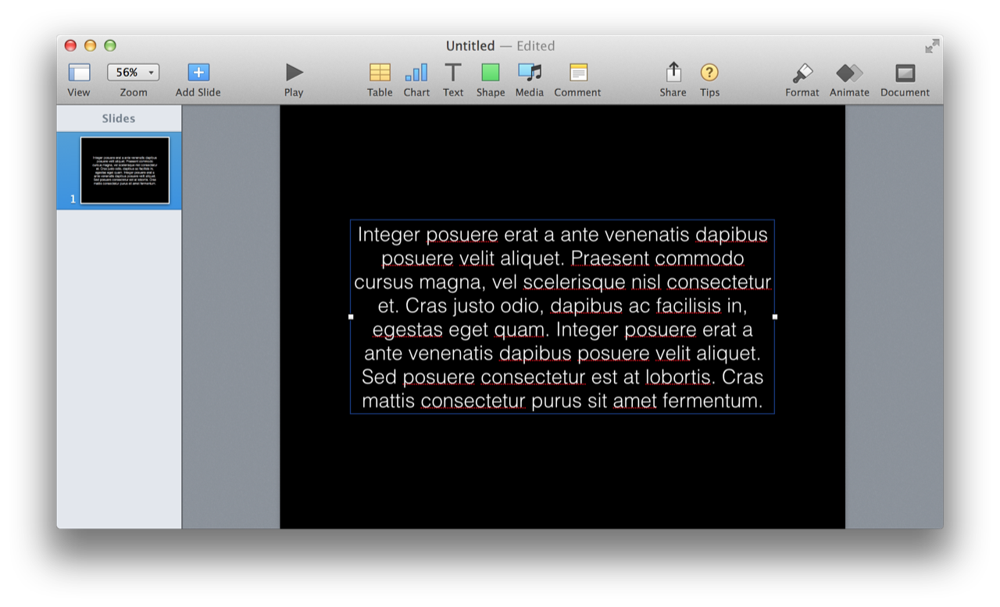

All iWork applications share a common set of elements: audio clips, movies, images, lines, shapes, tables, charts, and text items. And in each application, the controls and behaviors for each of the common elements are exactly the same, most of the time.
A text item is designed with a slightly different behavior than text boxes which also contain text but display eight adjustment handles. Given that it is a presentation program, the use of text in Keynote is nearly always for display (titles, subtitles, banners, headlines) or for minimal description (bullets, labels). It’s difficult to imagine a reason for laying out a long text document in Keynote (although it is possible).
The behavior of text items added with the Text button or Insert > Text Box menu, or via a script, are different than the text items (boxes) designated as the default title item or the default body item that display eight adjustment handles. These added text items offer no controls for adjusting vertical sizing, and by default, will horizontally scale to fit the text they contain.
NOTE: In Keynote and the other iWork applications, “simplified” text items can be converted to text boxes (showing eight handles) by adjusting their column count (in the Format > Text > Layout sidebar) from 1 to 2 and then back to 1, or by selecting the text item, choosing Format > Shapes and Lines > Make Editable, and then de-selecting the text item. Also note that the current Keynote scripting dictionary does not provide a means to remove the simplified behavior.

(⬆ see above ) A slide showing the two types of text items in Keynote: 1 the slide’s default title item and 2 default body item, and 3 and an added text item with simplified controls.
Whether they are visible or not, every Keynote slide incorporates two built-in default text items: one for the slide title 1 (⬇ see below ) and one for the slide body 2 . For some slides, the default body item are formatted as bullets 3 . The visibility of these text items is determined by the state of the Appearance checkboxes in the Slide Layout pane of the Format tab.

Here’s a script demonstrating how to set the text for the contents of a slide’s default text items:
For information about how default text items are incorporated into slide designs, see the section in the Slide topic about default text items.
The example script below demonstrates the behaviors associated with scripting a text item with simplified controls.
(⬇ see below ) The example creates a new item. The text item is created using the theme’s default paragraph style (caption in this example) which determines font, color, text size, and text alignment (centered) for the simplified text item. In addition, the text item is automatically centered horizontally and vertically in the slide:

(⬇ see below ) The script changes the contents of the text item and the text item shrinks to fit the new width of the text:
(⬇ see below ) The script replaces the shorter text contents with a paragraph that is longer than the width of the slide. The text item automatically expands to fit the width of the slide, then wraps the paragraph to be multiple lines. In addition, the simplified text item remains vertically centered on the slide:

(⬇ see below ) The script then adjusts the width of the text item to be 3/4 the width of the slide. Note that the slide does not auto-center horizontally:

(⬇ see below ) The script then horizontally centers the text item on the slide , using the text item’s current vertical positon:
